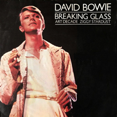

The second of two inessential double live albums David Bowie released in the '70s, 1978's Stage is a different beast than its 1974 predecessor, David Live. That album captured Bowie in a transitional phase, sliding from glam to stylised soul, while Stage was recorded in the thick of his Berlin phase with producer / collaborator Brian Eno, and Stage is an attempt to translate that sleek, angular, arty studio-bound sound to the live arena. This means not only are Low and "Heroes" given live treatments, but about half of both Ziggy Stardust and Station to Station are given new arrangements here. On these older tunes, the new flair - the synthesizers and Adrian Belew's tangled, mathematical guitar - doesn't sound sleek, it sounds chintzy and cheap, not quite fully formed. The newer songs suffer from this, too, and that's because the performances are too direct and the recording is too crisp and clear, removing the dark, foreboding mystery and assuredness that made Low and "Heroes" thrilling, compelling listens. Consequently, Stage winds up as a curiosity, and not a very interesting one at that.
HANG ON TO YOURSELF
Well she's a tongue twisting storm,
She will come to the show tonight
Praying to the light machine
She wants my honey not my money
she's a funky-thigh collector
Layin' on 'lectric dreams
[CHORUS]
So come on, come on
We've really got a good thing going
Well come on, well come on
If you think we're gonna make it
You better hang on to yourself
We can't dance, we don't talk much
We just ball and play
But then we move like tigers on vaseline
Well the bitter comes out better on a stolen guitar
You're the blessed, we're the Spiders from Mars
[CHORUS x3]
Come on, ah, come on, ah [repeat]
ZIGGY STARDUST
Ziggy played guitar, jamming good with Weird and Gilly
And the Spiders from Mars
He played it left hand, but made it too far
Became the special man
Then we were Ziggy's Band
Ziggy really sang, screwed up eyes
and screwed down hairdo
Like some cat from Japan, he could lick 'em by smiling
He could leave 'em to hang
Here came on so loaded man
Well hung and snow white tan
So where were the spiders
While the fly tried to break our balls?
Just the beer light to guide us
So we bitched about his fans
and should we crush his sweet hands?
Ziggy played for time, jiving us that we were Voodoo
The kids was just crass
He was the naz
With God given ass
He took it all too far
But boy could he play guitar
Making love with his ego
Ziggy sucked up into his mind
Like a leper messiah
When the kids had killed the man
I had to break up the band
Oh yeah
Ziggy played guitar
FIVE YEARS
Pushing through the market square
so many mothers sighing (sighing)
News had just come over
we had five years left to cry in
News-guy wept and told us
earth was really dying (dying)
Cried so much his face was wet
then I knew he was not lying (lying)
I heard telephones, opera house, favourite melodies
I saw boys, toys, electric irons and TVs
My brain hurt like a warehouse
it had no room to spare
I had to cram so many things
to store everything in there
And all the fat-skinny people,
and all the tall-short people
And all the nobody people,
and all the somebody people
I never thought I'd need so many people
A girl my age went off her head
hit some tiny children
If the black hadn't a-pulled her off,
I think she would have killed them
A soldier with a broken arm,
fixed his stare to the wheels of a Cadillac
A cop knelt and kissed the feet of a priest
and a queer threw up at the sight of that
I think I saw you in an ice-cream parlour
drinking milk shakes cold and long
Smiling and waving and looking so fine
don't think you knew you were in this song
And it was cold and it rained so I felt like an actor
And I thought of Ma and I wanted to get back there
Your face, your race, the way that you talk
I kiss you, you're beautiful, I want you to walk
We've got five years, stuck on my eyes
We've got five years, what a surprise
We've got five years, my brain hurts a lot
We've got five years, that's all we've got
We've got five years, what a surprise
We've got five years, stuck on my eyes
We've got five years, my brain hurts a lot
We've got five years, that's all we've got
SOUL LOVE
Stone love - she kneels before the grave
A brave son - who gave his life to save the slogan
That hovers between the headstone and her eyes
For they penetrate her grieving
New love - a boy and girl are talking
New words - that only they can share in
New words - a love so strong it tears their hearts
To sleep - through the fleeting hours of morning
[CHORUS]
Love is careless in its choosing
Sweeping over cross a baby
Love descends on those defenceless
Idiot love will spark the fusion
Inspirations have I none
Just to touch the flaming dove
All I have is my love of love
And love is not loving
Soul love - the priest that tastes the word and
Told of love - and how my God on high is
All love - though reaching up my loneliness evolves
By the blindness that surrounds him
[CHORUS]
STAR
Tony went to fight in Belfast
Rudi stayed at home to starve
I could make it all worthwhile
As a rock 'n' roll star
Bevan tried to change the nation
Sonny wants to turn the world,
Well he can tell you that he tried
[CHORUS x2]
I could make a transformation as a rock 'n' roll star
So inviting - so enticing to play the part
I could play the wild mutation
as a rock 'n' roll star
I could do with the money
I'm so wiped out with things as they are
I'd send my photograph to my honey -
And I'd c'mon like a regular superstar
I could fall asleep at night
As a rock 'n' roll star
I could fall in love all right
As a rock & roll star
Just watch me now!
STATION TO STATION
The return of the Thin White Duke
Throwing darts in lovers' eyes
Here are we, one magical moment
Such is the stuff, from where dreams are woven
Bending sound, dredging the ocean
Lost in my circle
Here am I, flashing no colour
Tall in this room overlooking the ocean
Here are we, one magical movement
From Kether to Malkuth
There are, you drive like a demon
From station to station
The return of the Thin White Duke
Throwing darts in lovers' eyes
The return of the Thin White Duke
Throwing darts in lovers' eyes
The return of the Thin White Duke
Making sure white stains
Once there were mountains on mountains
And once there were sun birds to soar with
And once I could never be down
Got to keep searching and searching
And oh, what will I be believing
And who will connect me with love?
Wonder who, wonder who, wonder when
Have you sought fortune, evasive and shy?
Drink to the men who protect you and I
Drink, drink, drain your glass, raise your glass high
It's not the side-effects of the cocaine
I'm thinking that it must be love
It's too late to be grateful
It's too late to be late again
It's too late to be hateful
The European canon is near
I must be only one in a million
I won't let the day pass without her
It's too late to be grateful
It's too late to be late again
It's too late to be hateful
The European canon is here
Should I believe that I've been stricken?
Does my face show some kind of glow?
It's too late to be grateful
It's too late to be late again
It's too late to be hateful
The European canon is here, yes it's here
It's too late, It's too late
It's too late, It's too late
It's too late
The European canon is near
It's not the side-effects of the cocaine
I'm thinking that it must be love
It's too late to be grateful
It's too late to be late again
It's too late to be hateful
The European canon is here
I must be only one in a million
I won't let the day pass without her
It's too late to be grateful
It's too late to be late again
It's too late to be hateful
The European canon is here, yes it's here
Should I believe that I've been stricken?
Does my face show some kind of glow?
It's too late to be grateful
It's too late to be late again
It's too late to be hateful
The European canon is here, yes it's here
It's too late, It's too late
It's too late, It's too late
It's too late
The European canon is here
FAME
Fame (fame) makes a man take things over
Fame (fame) lets him loose, hard to swallow
Fame (fame) puts you there where things are hollow
Fame (fame)
Fame, it's not your brain, it's just the flame
That burns your change to keep you in... sane (sane)
Fame (fame)
Fame (fame) what you like is in the limo
Fame (fame) what you get is no tomorrow
Fame (fame) what you need you have to borrow
Fame (fame)
Fame, "Nein! It's mine!" is just his line
To bind your time, it drives you to... crime
Fame (fame)
Could it be the best, could it be?
Really be, really, babe?
Could it be, my babe, could it, babe?
Could it, babe? Could it, babe?
Is it any wonder I reject you first?
Fame (fame) fame, fame, fame (fame)
Is it any wonder you are too cool to fool
Fame (fame)
Fame, bully for you, chilly for me
Got to get a rain check on... pain (pain)
(Fame)
Fame, fame, fame, fame, fame, fame, fame,
Fame
What's your name?
(Feeling so gay, feeling gay)
TVC 15
Oh oh oh oh oh, oh oh oh oh oh
Oh oh oh oh oh, oh oh oh oh oh
Oh oh oh oh oh, oh oh oh oh oh
Up every evening 'bout half eight or nine
I give my complete attention to a very good friend of mine
He's quadraphonic, he's a, he's got more channels, a
So hologramic, oh, my TVC 15
I brought my baby home, she, she sat around forlorn
She saw my TVC 15, baby's gone, she
She crawled right in, my, my, she crawled right in my
So hologramic, oh, my TVC 15
Oh, so demonic, oh, my TVC 15
Maybe if I pray every each night I sit there pleading
"Send back my dream test baby, she's my main feature"
My TVC 15, yeah, he just stares back unblinking
So hologramic, oh, my TVC 15
One of these nights I may just jump down that rainbow way
Be with my baby, then we'll spend some time together
So hologramic oh my TVC 15
My baby's in there someplace, love's rating in the sky
So hologramic, oh, my TVC 15
Transition
Transmission
Transition
Transmission
Oh, my TVC 15
Uh oh, TVC 15
Oh, my TVC 15
Uh oh, TVC 15
Oh, my TVC 15
Uh oh, TVC 15
Oh, my TVC 15
Uh oh, TVC 15
Maybe if I pray every, each night I sit there pleading
"Send back my dream test baby, she's my main feature"
My TVC 15, yeah, he just stares back unblinking
So hologramic, oh, my TVC 15
One of these nights I may just, jump down that rainbow way
Be with my baby, then we'll spend some time together
So hologramic, oh, my TVC 15
My baby's in there someplace
Love's rating in the sky
So hologramic, oh, my TVC 15
Oh oh oh oh oh, oh oh oh oh oh
Oh oh oh oh oh, oh oh oh oh oh
Oh oh oh oh oh, oh oh oh oh oh
Transition
Transmission
Transition
Transmission
Oh, my TVC 15
Uh oh, TVC 15
Oh, my TVC 15
Uh oh, TVC 15
WARSZAWA
Mmmm-mm-mm-ommm
Sula vie dilejo
Mmmm-mm-mm-ommm
Sula vie milejo
Mmm-omm
Cheli venco deho
Cheli venco deho
Malio
Mmmm-mm-mm-ommm
Helibo seyoman
Cheli venco raero
Malio
Malio
SPEED OF LIFE
(Instrumental)
ART DECADE
(Instrumental)
SENSE OF DOUBT
(Instrumental)
BREAKING GLASS
Baby, I've been
Breaking glass
In your room again
Listen
Don't look at the carpet
I drew something awful on it
See
You're such a wonderful person
But you got problems oh-oh-oh-oh
I'll never touch you
"HEROES"
I, I will be king
And you, you will be queen
Though nothing will drive them away
We can beat them just for one day
We can be heroes just for one day
And you, you can be mean
And I, I'll drink all the time
'Cause we're lovers, and that is a fact
Yes, we're lovers, and that is that
Though nothing will keep us together
We could steal time just for one day
We can be heroes forever and ever
What d'you say?
I, I wish you could swim
Like the dolphins, like dolphins can swim
Though nothing, nothing will keep us together
We can beat them forever and ever
Oh, we can be heroes just for one day
I, I will be king
And you, you will be queen
Though nothing will drive them away
We can be heroes, just for one day
We can be us just for one day
I, I can remember (I remember)
Standing by the wall (By the wall)
And the guns shot above our heads (Over our heads)
And we kissed as though nothing could fall (Nothing could fall)
And the shame was on the other side
Oh, we can beat them forever and ever
Then we could be heroes just for one day
We can be heroes
We can be heroes
We can be heroes just for one day
We can be heroes
We're nothing, and nothing will help us
Maybe we're lying, then you better not stay
But we could be safer just for one day
Oh-oh-oh-oh, oh-oh-oh-oh, just for one day
WHAT IN THE WORLD
You're just a little girl with grey eyes
Never mind, say something
Wait until the crowd cries
Oh, wait until the crowd cries
You're just a little girl with grey eyes
So deep in your room
You never leave your room
Something deep inside of me
Yearning deep inside of me
Talking through the gloom
What in the world can you do?
What in the world can you do?
I'm in the mood for your love
For your love
For your love
For your love
I'm just a little bit afraid of you
'Cause love won't make you cry
But, wait until the crowd goes
Oh, wait until the crowd goes
I'm just a little bit afraid of you
So deep in your room
You never leave your room
Something deep inside of me
Yearning deep inside of me
Is talking through the gloom
What in the world can I do?
What in the world can I do?
I'm in the mood for your love
For your love
For your love
Oh, what you gonna say?
Oh, what you gonna do?
Ah, what you gonna be?
To the real me
To the real me
BLACKOUT
Oh you, you walk on past
Your lips cut a smile on your face
(Your scalding face)
To the cage, to the cage
She was a beauty in a cage
It's too, too high a price
To drink rotting wine from your hands
(Your fearful hands)
Get me to the doctor's, I've been told
Someone's back in town, the chips are down
I just cut and blackout
I'm under Japanese influence and my honour's at stake
The weather's grim, ice on the cages
Me, I'm Robin Hood, and I puff on my cigarette
Panthers are steaming, stalking, screaming
If you don't stay tonight
I will take that plane tonight
I've nothing to lose, nothing to gain
I'll kiss you in the rain, kiss you in the rain
(Kiss you in the rain) Kiss you in the rain (Kiss you in the rain)
In the rain (In the rain)
Get me to the doctor
Get me off the streets
(Get some protection)
Get me on my feet
(Get some direction)
Hot air gets me into a blackout
Oh, get me off the streets
Get some protection
Oh get me on my feet (wo-ooh!)
While the streets block off
Getting some skin exposure to the blackout
(Get some protection)
Get me on my feet
(Get some direction, wo-ooh!)
Oh get me on my feet
Get me off the streets
(Get some protection)
BEAUTY AND THE BEAST
Weaving down a byroad
Singing the song
That's my kind of highroad
Gone wrong
My-my, smile at least
You can't say no to the Beauty and the Beast
Something in the night
Something in the day
Nothing is wrong but darling
Something's in the way
There's slaughter in the air
Protest on the wind
Someone else inside me
Someone could get skinned, how?
My-my, someone fetch a priest
You can't say no to the Beauty and the Beast, darling
My-my
You can't say no to the Beauty and the Beast
My-my
You can't say no to the Beauty and the Beast
I wanted to believe me
I wanted to be good
I wanted no distractions
Like every good boy should, my-my
Nothing will corrupt us
Nothing will compete
Thank God heaven left us
Standing on our feet
My-my, Beauty and the Beast, my-my
Just Beauty and the Beast
You can't say no to the Beauty and the Beast, darling
My-my, my-my
SINGLES
